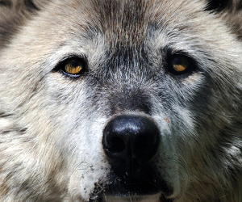
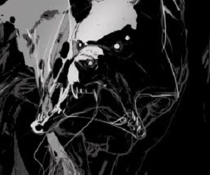
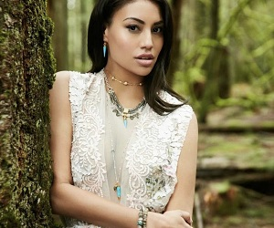

"Mo"
- Name: Grandfather Mohammed “Mo” Hussein
- Deedname/Shadowname: Brother’s-Friend’s-Cousin
- Apparent Age: Early 80s
- Breed: Homid
- Tribe/Tradition: Bone Gnawer
- Auspice/Faction: Galliard
- Visible Merits/Flaws: Urban Elder
- General Disposition and/or Description: Rare for his auspice, Mo is a quiet, thoughtful man. The best stories are in the silence between the words. He always knows a guy who knows a guy and is always up to something...the question is: What?
Burned-Fur

- Name: Burned-Fur
- Deedname/Shadowname: Back-from-the-Land-of-Fire
- Apparent Age: Mid 70s
- Breed: Lupus
- Tribe/Tradition: Child of Gaia
- Auspice/Faction: Ragabash
- Visible Merits/Flaws: Rural Sept Elder
- General Disposition and/or Description: Even in the face of the apocalypse, Burned-Fur never lost his wonder of Gaia and her creation. Though his quick wit and keen instincts keep him from being gullible or naive. But he’s tired, and he isn’t getting on as well he used to, the best he can do is impart his wisdom before taking the Rite of the Winter Wolf.
Ximina
- Name: Ximina Hernandez-Solis
- Deedname/Shadowname: Lucky-Strike
- Apparent Age: Early 40s
- Breed: Homid
- Tribe/Tradition: Glass Walkers
- Auspice/Faction: Ahroun
- Visible Merits/Flaws: Warder
- General Disposition and/or Description: Failure is a bitter pill to swallow, and Ximina has experienced a lot of it in her life. She’s lost her pack, and has seen outsiders take what was once her tribal camp’s Sept from her as well...for that she’s angry and bitter. Nevermind what they call her behind her back...
Carli
- Name: Carli Len
- Deedname/Shadowname: Toothbreaker
- Apparent Age: Mid 30s
- Breed: Homid
- Tribe/Tradition: Uktena
- Auspice/Faction: Theurge
- Visible Merits/Flaws: Master of the Rite
- General Disposition and/or Description: Life is either a daring adventure or nothing at all. A few ranks ago, nothing or nobody could slow Carli down. She was an unstoppable force and constant thorn in the Wyrm’s side...now she’s been told she has to grow up and settle down...but why settle?
Chipeta

- Name: Chipeta
- Deedname/Shadowname: Home-Finder
- Apparent Age: Late 20s
- Breed: Metis
- Tribe/Tradition: Uktena
- Auspice/Faction: Philodox
- Visible Merits/Flaws: Monstrous (Spider features), Master of the Challenge
- General Disposition and/or Description: It’s curious the way Garou, like nature itself, hates a vacuum, the Sept is turmoil, and Chipeta has been a busy little bee as the cubs that survived the fight for The Sept of Burning Sands come to age...it’s like a great social experiment for her. Just pick em apart and watch what makes them tick.
Sage

- Name: Sage Grey
- Deedname/Shadowname: Cures-the-Afflicted
- Apparent Age: Late 20s
- Breed: Homid
- Tribe/Tradition: Uktena
- Auspice/Faction: Theurge
- Visible Merits/Flaws: N/A
- General Disposition and/or Description: Very calm woman with lots of wisdom. Healer, mother, spirit worker, speaker of indigenous rights.
Rick
- Name: Rick
- Deedname/Shadowname: Rides-the-Roil
- Apparent Age: Mid 20s
- Breed: Metis
- Tribe/Tradition: Uktena
- Auspice/Faction: Ahroun
- Visible Merits/Flaws: Black Eyes (no visible sclera)
- General Disposition and/or Description: Generally uncaring of personal appearance or social norms, Rick spends much of his time goofing around and playing the part of a ‘divine fool’ when he isn’t fighting. He takes little seriously and even less as a legitimate threat, leading to a stark recklessness.
Feng
- Name: Feng Lao
- Deedname/Shadowname: Ermahgerd-So-Started-Blastin
- Apparent Age: Mid 20s
- Breed: Homid
- Tribe/Tradition: Glass Walker
- Auspice/Faction: Theurge
- Visible Merits/Flaws: N/A
- General Disposition and/or Description: A kind man who does his best to help any that needed, he keeps to him self and generally has a calm and clean appearance. He spends his time mentoring any that request it of him, or patroling around the sept grounds. He has a distaste for some of his pack mate's recklessness but he does his best to curb it so it doesn't get too outta hand.
Vreni
- Name: Vreni Frank
- Deedname/Shadowname: unknown
- Apparent Age: Late 20s
- Breed: Lupus
- Tribe/Tradition: unknown
- Auspice/Faction: Galliard
- Visible Merits/Flaws: N/A
- General Disposition and/or Description: unknown
Gnome's Wolf
- Name: The character's known name
- Deedname/Shadowname: The name they use amongst other Mages/Shifters
- Apparent Age: NOT actual age, but rather what they look like
- Breed: What were they born as? In the case of Shifters, this is Homid/Feral/Metis. In the case of Mages, this simply states that they are a Mage.
- Tribe/Tradition: What group are they a part of?
- Auspice/Faction: If a Shifter, what Auspice? If a Mage (or a Shifter without auspice equivalents), this is the group/camp/chantry they are part of.
- Visible Merits/Flaws: What would a character who meets them be able to notice which is unique?
- General Disposition and/or Description: A general idea of how they dress, how they act, what motivates them, etc. These are generally details that are well known in their respective factions.